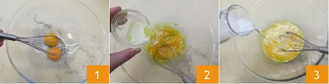
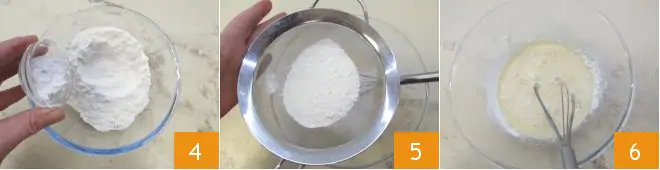
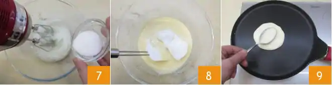
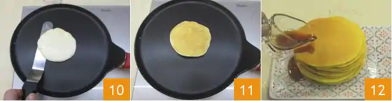

Ricetta pancakes allo sciroppo d'acero
Se state progettando un viaggio negli Stati Uniti, preparatevi a degustare il tradizionale american breakfast con i deliziosi pancake, piccoli dischi spugnosi e saporiti che non aspettano altro che essere farciti con le leccornie più invitanti: la tradizione li vuole conditi con il tipico sciroppo d’acero, un dolcificante naturale con un gusto che ricorda quello del miele, usato anche per i fluffy pancake. Ma accanto a questo tipico abbinamento sono ammesse tutte le varianti possibili, a patto che siano super golose: dalla frutta fresca o sciroppata, alle creme fino alle salse al cioccolato. Potrete anche realizzare una versione con lo yogurt, light e poco calorica, oppure una versione proteica, ideali per gli sportivi. Gli americani non si fanno mancare proprio nulla e spesso accompagnano il piatto di pancake con ciuffi di panna montata, come si fa a resistere? Di sicuro avrete già l’acquolina in bocca, se non volete aspettare la colazione potete preparare i pancake anche per merenda, ecco la nostra ricetta!
Ingredienti
Ingredienti per 12 pancakes
- Burro 25g
- Uova 2 medie
- Lievito in polvere 6g
- Farina 00 125g
- Latte intero 200g
- Zucchero 15g
- Sciroppo d'acero q.b.
Preparazione
Iniziamo la preparazione dei pancake fondendo il burro a fuoco bassissimo, quindi lasciate intiepidire. Intanto dividete gli albumi dai tuorli. Versate i tuorli in una ciotola e sbatteteli con una frusta a mano 1, poi unite il burro fuso a temperatura ambiente 2 e il latte a filo, continuando sempre a mescolare con la frusta 3. Montate il composto finchè non risulterà chiaro.
Unite il lievito alla farina 4 e setacciate tutto nella ciotola con il composto di uova 5, mescolate con la frusta per amalgamare 6.
Ora montate gli albumi che avete tenuto da parte, versando poco alla volta lo zucchero 7 e quando saranno bianchi e spumosi incorporateli delicatamente al composto di uova, con movimenti dall'alto verso il basso, per evitare di smontarli 8. Mettete a scaldare sul fuoco medio (non alto altrimenti non darete il tempo all'impasto di lievitare bene durante la cottura e i pancake diventeranno troppo scuri) una padella ampia antiaderente (meglio se a fondo spesso) e, se necessario, ungete con poco burro da spandere sulla superficie con l'aiuto di carta da cucina. Versate al centro del pentolino un mestolino di preparato 9, non ci sarà bisogno di spanderlo.
Quando inizieranno a comparire delle bollicine in superficie e la base sarà dorata, giratelo sull’altro lato per mezzo di una spatolina 10, come se fosse una crepe o una frittata, quindi fate dorare a sua volta anche l'altro lato, dopodichè il pancake sarà pronto 11. Proseguite così con il resto dell'impasto e man a mano disponete i pancake su un piatto da portata, impilateli uno sopra l'altro. Con queste dosi dovrebbero formarsi all'incirca 12 pancake. Serviteli caldi e cosparsi di sciroppo d’acero 12. Potete accompagnare i pancake con della frutta fresca o sciroppata di vostro gusto.
Conservazione
Si consiglia di consumare subito i pancake, oppure di conservarli in frigorifero per un giorno al massimo. Si sconsiglia la congelazione. L'impasto si può conservare in frigorifero coperto con pellicola per un massimo di 12 ore.
Consigli e curiosità
Per guarnire o accompagnare i pancake, oltre allo sciroppo d’acero (Maple Syrup) usato dagli americani per la maggiore, potete usare miele, Nutella, creme varie, burro d’arachidi, marmellate, panna semi-montata o acida, frutta fresca o sciroppata!
Per i molti lettori di Disney: i pancake non sono altro che le note frittelle di Paperino, che da bravo zio preparava con cura ai tre nipotini Qui, Quo e Qua!